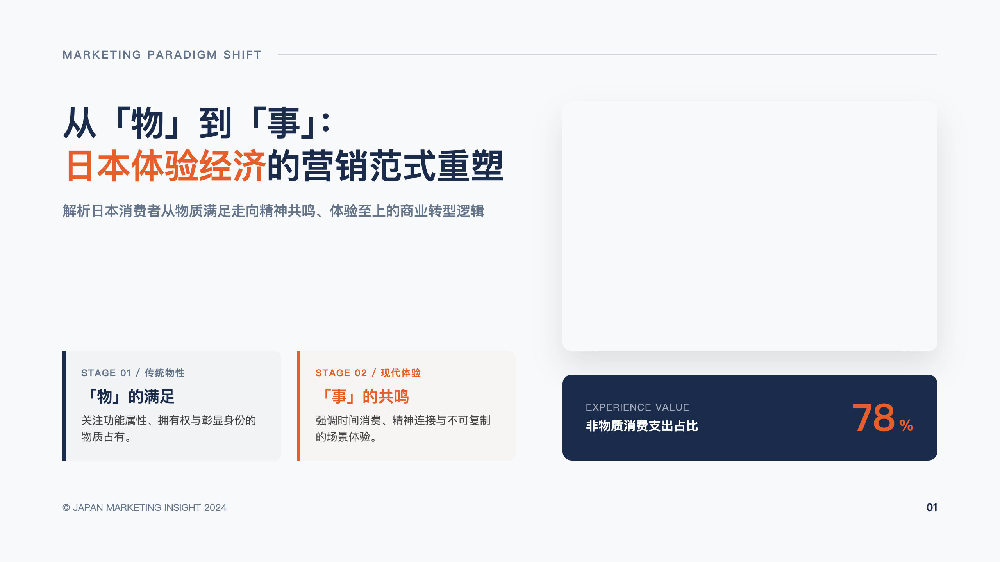
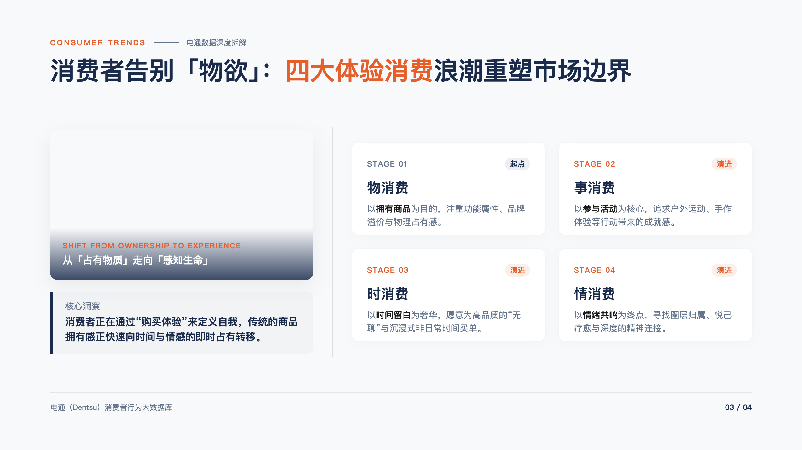
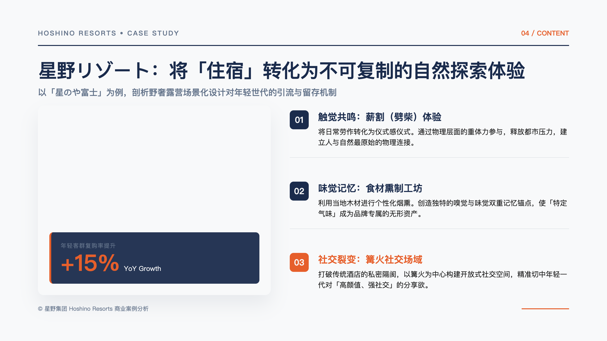
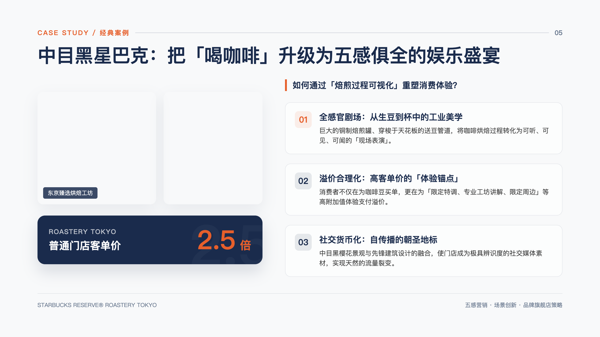
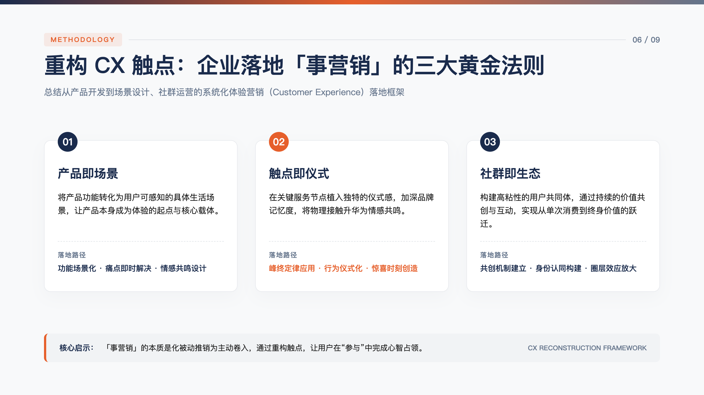
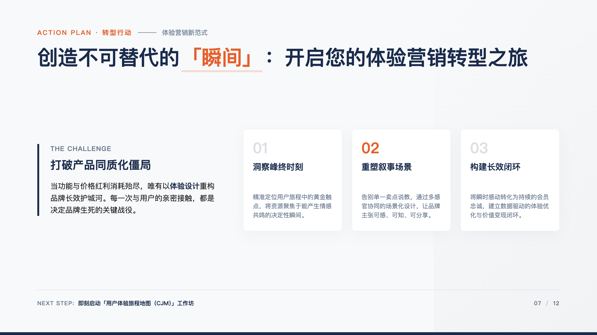

PROMPT 优化版 · 色彩一致性 CSS 变量
现代日本营销策略：从「物」到「事」的体验经济打法
7 页（含 toc）· 优化 prompt 强制 var(--c1)/var(--c2) 配色一致 · project YZNt3wRcUI · 2026-07-04
⬇ 下载 PPTX
本次优化：System Prompt 规范化 + 色彩一致性
所有 LLM 调用 prompt 升级（角色/输出格式/约束/失败模式），HTML 生成 prompt 强制用 CSS 变量 var(--c1)/var(--c2)/var(--c3)/var(--paper)/var(--ink) 而非自填 hex，wrapHtml 注入完整 :root 变量系统，全 deck 色彩严格一致。
01从「物」到「事」：日本体验经济的营销范式重塑
cover原件 ↗ 
03消费者告别「物欲」：四大体验消费浪潮重塑市场边界
content原件 ↗ 
04星野リゾート：将「住宿」转化为不可复制的自然探索体验
content原件 ↗ 
05中目黑星巴克：把「喝咖啡」升级为五感俱全的娱乐盛宴
content原件 ↗ 
06重构 CX 触点：企业落地「事营销」的三大黄金法则
content原件 ↗ 
07创造不可替代的「瞬间」：开启您的体验营销转型之旅
closing原件 ↗ 